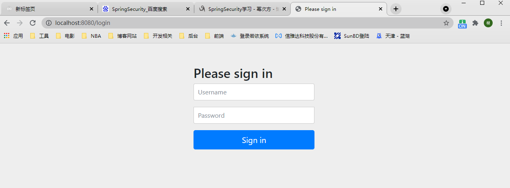
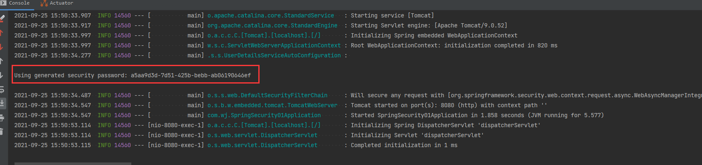
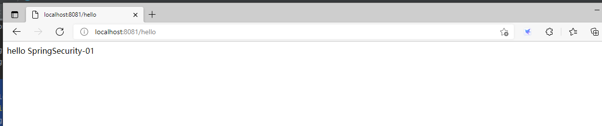
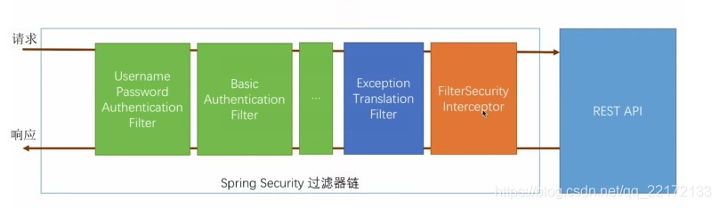
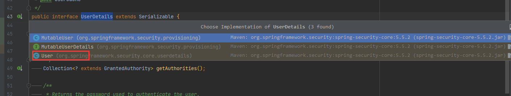
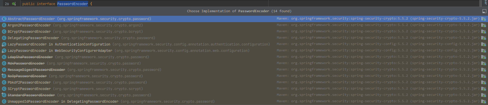
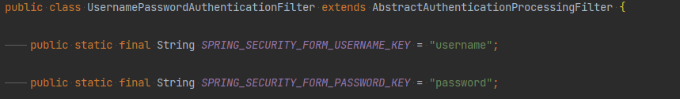
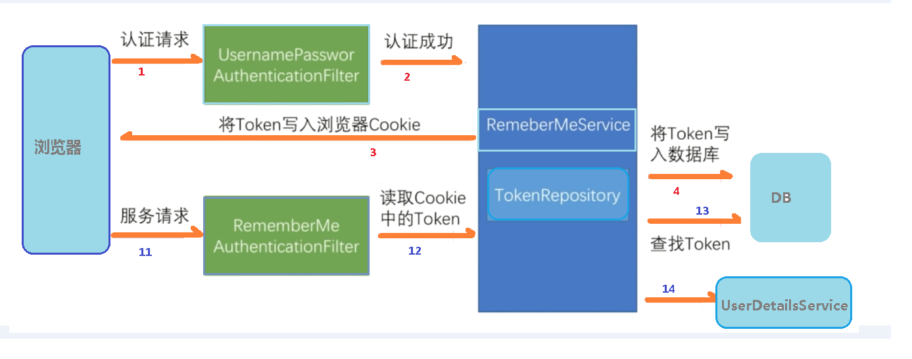
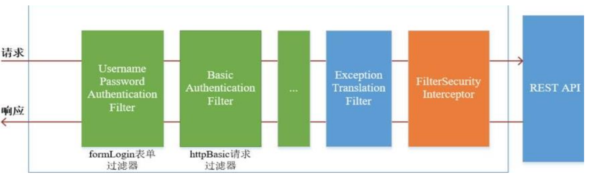
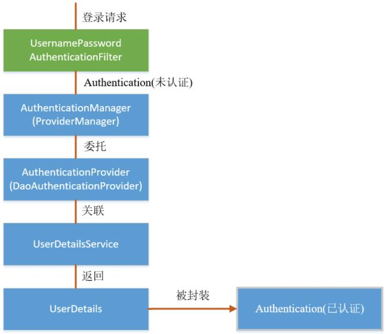

1.框架简介 1.1概要 Spring 是非常流行和成功的 Java 应用开发框架，SpringSecurity 正是 Spring 家族中的成员。SpringSecurity 基于 Spring 框架，提供了一套 Web 应用安全性的完整解决方案。
正如你可能知道的关于安全方面的两个主要区域是 认证 和 授权（或者访问控制），一般来说，Web 应用的安全性包括 用户认证（Authentication）和 用户授权（Authorization）两个部分，这两点也是 Spring Security 重要核心功能。
用户认证：指的是验证某个用户是否为系统中的合法主体，也就是说用户能否访问该系统。用户认证一般要求用户提供用户名和密码。系统通过校验用户名和密码来完成认证过程。通俗点说就是系统认为用户是否能登录
用户授权：指的是验证某个用户是否有权限执行某个操作。在一个系统中，不同用户所具有的权限是不同的。比如对一个文件来说，有的用户只能进行读取，而有的用户可以进行修改。一般来说，系统会为不同的用户分配不同的角色，而每个角色则对应一系列的权限。通俗点讲就是系统判断用户是否有权限去做某些事情。
1.2历史 SpringSecurity 开始于 2003 年年底, “spring 的 acegi 安全系统”。 起因是 Spring开发者邮件列表中的一个问题,有人提问是否考虑提供一个基于 spring 的安全实现。
SpringSecurity 以“The Acegi Secutity System forSpring” 的名字始于 2013 年晚些时候。一个问题提交到 Spring 开发者的邮件列表，询问是否已经有考虑一个机遇 Spring的安全性社区实现。那时候 Spring 的社区相对较小（相对现在）。实际上 Spring 自己在2013 年只是一个存在于 ScourseForge 的项目，这个问题的回答是一个值得研究的领域，虽然目前时间的缺乏组织了我们对它的探索。
考虑到这一点，一个简单的安全实现建成但是并没有发布。几周后，Spring 社区的其他成员询问了安全性，这次这个代码被发送给他们。其他几个请求也跟随而来。到 2014 年一月大约有 20 万人使用了这个代码。这些创业者的人提出一个 SourceForge 项目加入是为了，这是在 2004 三月正式成立。
在早些时候，这个项目没有任何自己的验证模块，身份验证过程依赖于容器管理的安全性和 Acegi 安全性。而不是专注于授权。开始的时候这很适合，但是越来越多的用户请求额外的容器支持。容器特定的认证领域接口的基本限制变得清晰。还有一个相关的问题增加新的容器的路径，这是最终用户的困惑和错误配置的常见问题。
Acegi 安全特定的认证服务介绍。大约一年后，Acegi 安全正式成为了Spring 框架的子项目。1.0.0 最终版本是出版于 2006 -在超过两年半的大量生产的软件项目和数以百计的改进和积极利用社区的贡献。
Acegi 安全 2007 年底正式成为了 Spring 组合项目，更名为”Spring Security”。
1.3同款产品对比 1.3.1 Spring Security Spring 技术栈的组成部分。通过提供完整可扩展的认证和授权支持保护你的应用程序。https://spring.io/projects/spring-security
SpringSecurity特点：
和 Spring 无缝整合。
全面的权限控制。
专门为 Web 开发而设计。
旧版本不能脱离Web 环境使用。
新版本对整个框架进行了分层抽取，分成了核心模块和Web 模块。单独引入核心模块就可以脱离Web 环境。
重量级。(需要大量的引入其他组件)
1.3.2 Shiro Apache 旗下的轻量级权限控制框架。
Shiro 特点：
Spring Security 是 Spring家族中的一个安全管理框架，实际上，在 Spring Boot 出现之前，Spring Security 就已经发展了多年了，但是使用的并不多，安全管理这个领域，一直是 Shiro 的天下。
相对于 Shiro，在 SSM 中整合Spring Security 都是比较麻烦的操作，所以，SpringSecurity 虽然功能比Shiro 强大，但是使用反而没有 Shiro 多（Shiro 虽然功能没有Spring Security 多，但是对于大部分项目而言，Shiro 也够用了）。
自从有了 Spring Boot 之后，Spring Boot 对于 Spring Security 提供了自动化配置方案，可以使用更少的配置来使用 SpringSecurity。因此，一般来说，常见的安全管理技术栈的组合是这样的：
SSM + Shiro
Spring Boot/Spring Cloud + SpringSecurity
以上只是一个推荐的组合而已，如果单纯从技术上来说，无论怎么组合，都是可以运行的。
2.入门案例 2.1 创建第一个项目 使用 IDEA 中 Spring Initializr 创建一个 springBoot项目
2.1.1 POM 文件 1 2 3 4 5 6 7 8 9 10 11 12 13 14 15 16 17 18 19 20 21 22 23 24 25 26 27 28 29 30 31 32 <?xml version="1.0" encoding="UTF-8" ?> <project xmlns ="http://maven.apache.org/POM/4.0.0" xmlns:xsi ="http://www.w3.org/2001/XMLSchema-instance" xsi:schemaLocation ="http://maven.apache.org/POM/4.0.0 https://maven.apache.org/xsd/maven-4.0.0.xsd" > <modelVersion > 4.0.0</modelVersion > <parent > <groupId > com.wj</groupId > <artifactId > SpringSecurity</artifactId > <version > 0.0.1-SNAPSHOT</version > </parent > <artifactId > SpringSecurity-01</artifactId > <properties > <java.version > 1.8</java.version > </properties > <dependencies > <dependency > <groupId > org.springframework.boot</groupId > <artifactId > spring-boot-starter-web</artifactId > </dependency > <dependency > <groupId > org.springframework.boot</groupId > <artifactId > spring-boot-starter-security</artifactId > </dependency > <dependency > <groupId > org.springframework.boot</groupId > <artifactId > spring-boot-starter-test</artifactId > <scope > test</scope > </dependency > </dependencies > </project >
2.1.2 controller 1 2 3 4 5 6 7 8 @RestController public class HelloController { @RequestMapping("/hello") public String Hello () { System.out.println("hello SpringSecurity-01!" ); return "hello SpringSecurity-01" ; } }
2.1.3 测试 访问 localhost:8081/hello

默认的用户名：user
密码在项目启动的时候在控制台会打印，注意每次启动的时候密码都回发生变化！

输入用户名，密码，这样表示可以访问了。

2.2 权限管理中的相关概念 2.2.1 主体 英文单词：principal
使用系统的用户或设备或从其他系统远程登录的用户等等。简单说就是谁使用系统谁就是主体。
2.2.2 认证 英文单词：authentication
权限管理系统确认一个主体的身份，允许主体进入系统。简单说就是“主体”证 明自己是谁。 笼统的认为就是以前所做的登录操作。
2.2.3 授权 英文单词：authorization
将操作系统的 “权力” “授予” “主体”，这样主体就具备了操作系统中特定功 能的能力。 所以简单来说，授权就是给用户分配权限。
3.SpringSecurity 基本原理 3.1 SpringSecurity 本质 SpringSecurity 的本质是一个过滤器链，从启动日志中 是可以获取到过滤器链：
1 2 3 4 5 6 7 8 9 10 11 12 13 14 15 16 17 2021-09-25 16:05:45.276 INFO 8868 --- [ main] o.s.s.web.DefaultSecurityFilterChain : Will secure any request with [ org.springframework.security.web.context.request.async.WebAsyncManagerIntegrationFilter, org.springframework.security.web.context.SecurityContextPersistenceFilter, org.springframework.security.web.header.HeaderWriterFilter, org.springframework.security.web.csrf.CsrfFilter, org.springframework.security.web.authentication.logout.LogoutFilter, org.springframework.security.web.authentication.UsernamePasswordAuthenticationFilter, org.springframework.security.web.authentication.ui.DefaultLoginPageGeneratingFilter, org.springframework.security.web.authentication.ui.DefaultLogoutPageGeneratingFilter, org.springframework.security.web.authentication.www.BasicAuthenticationFilter, org.springframework.security.web.savedrequest.RequestCacheAwareFilter, org.springframework.security.web.servletapi.SecurityContextHolderAwareRequestFilter, org.springframework.security.web.authentication.AnonymousAuthenticationFilter, org.springframework.security.web.session.SessionManagementFilter, org.springframework.security.web.access.ExceptionTranslationFilter, org.springframework.security.web.access.intercept.FilterSecurityInterceptor ]

代码底层流程：
重点看三个过滤器：
FilterSecurityInterceptor :：是一个方法级的权限过滤器, 基本位于过滤链的最底部
ExceptionTranslationFilter :：是个异常过滤器，用来处理在认证授权过程中抛出的异常
UsernamePasswordAuthenticationFilter ：对/login 的 POST 请求做拦截，校验表单中用户 名，密码。
3.2 SpringSecurity过滤器启动原理
4.两个重要的接口 SpringSecurity 中有两个重要的接口 UserDetailsService，PasswordEncoder
4.1 UserDetailsService 当什么也没有配置的时候，账号和密码是由 Spring Security 定义生成的。而在实际项目中账号和密码都是从数据库中查询出来的。 所以我们要通过自定义逻辑控制认证逻辑。
如果需要自定义逻辑时，只需要实现 UserDetailsService 接口即可。接口定义如下：
1 2 3 4 5 6 7 8 9 10 11 12 13 14 15 16 17 package org.springframework.security.core.userdetails;public interface UserDetailsService { UserDetails loadUserByUsername (String username) throws UsernameNotFoundException; }
返回值 UserDetails 对象
这个类是系统默认的用户”主体 “
1 2 3 4 5 6 7 8 9 10 11 12 13 14 15 16 17 public interface UserDetails extends Serializable { Collection<? extends GrantedAuthority > getAuthorities(); String getPassword () ; String getUsername () ; boolean isAccountNonExpired () ; boolean isAccountNonLocked () ; boolean isCredentialsNonExpired () ; boolean isEnabled () ; }
以下是 UserDetails 实现类 ctrl+alt+b

以后我们只需要使用 User 这个实体类即可!
1 2 3 4 5 6 public User (String username, String password, Collection<? extends GrantedAuthority> authorities) { this (username, password, true , true , true , true , authorities); }
方法参数 username:
表示用户名。此值是客户端表单传递过来的数据。默认情况下必须叫 username，否则无 法接收。
4.2 PasswordEncoder 1 2 3 4 5 6 7 8 9 10 public interface PasswordEncoder { String encode (CharSequence rawPassword) ; boolean matches (CharSequence rawPassword, String encodedPassword) ; default boolean upgradeEncoding (String encodedPassword) { return false ; } }
接口实现类:

BCryptPasswordEncoder 是 Spring Security 官方推荐的密码解析器，平时多使用这个解析器。
BCryptPasswordEncoder 是对 bcrypt 强散列方法的具体实现。是基于 Hash 算法实现的单向加密。可以通过 strength 控制加密强度，默认 10.
查用方法演示：
1 2 3 4 5 6 7 8 9 10 11 12 13 @Test public void test01 () { BCryptPasswordEncoder bCryptPasswordEncoder = new BCryptPasswordEncoder (); String atguigu = bCryptPasswordEncoder.encode("atguigu" ); System.out.println("加密之后数据：\t" +atguigu); boolean result = bCryptPasswordEncoder.matches("atguigu" , atguigu); System.out.println("比较结果：\t" +result); }
5.Web 权限方案 5.1 设置账号、密码 5.1.1 方式一 在 application.properties 指定 账号和密码
1 2 3 4 5 6 7 server: port: 8080 spring: security: user: name: wj password: 123456
5.1.2 方式二 自定义实现配置类，在自定义配置类中 指定 账号和密码
1 2 3 4 5 6 7 8 9 10 11 12 13 14 15 16 17 18 19 20 21 22 23 package com.wj.config;import org.springframework.context.annotation.Bean;import org.springframework.context.annotation.Configuration;import org.springframework.security.config.annotation.authentication.builders.AuthenticationManagerBuilder;import org.springframework.security.config.annotation.web.configuration.WebSecurityConfigurerAdapter;import org.springframework.security.crypto.bcrypt.BCryptPasswordEncoder;import org.springframework.security.crypto.password.PasswordEncoder;@Configuration public class SecurityConfig extends WebSecurityConfigurerAdapter { @Override protected void configure (AuthenticationManagerBuilder auth) throws Exception { BCryptPasswordEncoder passwordEncoder = new BCryptPasswordEncoder (); String encode = passwordEncoder.encode("111111" ); auth.inMemoryAuthentication().withUser("wangjian" ).password(encode).roles("admin" ); } @Bean PasswordEncoder getPasswordEncoder () { return new BCryptPasswordEncoder (); } }
5.1.3 方式三 编写类实现接口，在实现类接口中指定 账号和密码
第一步：编写实现类，返回 User对象，User 对象有用户名密码和操作权限
1 2 3 4 5 6 7 8 9 10 11 12 13 14 15 16 17 18 19 20 21 package com.wj.service;import org.springframework.security.core.GrantedAuthority;import org.springframework.security.core.authority.AuthorityUtils;import org.springframework.security.core.userdetails.User;import org.springframework.security.core.userdetails.UserDetails;import org.springframework.security.core.userdetails.UserDetailsService;import org.springframework.security.core.userdetails.UsernameNotFoundException;import org.springframework.security.crypto.bcrypt.BCryptPasswordEncoder;import org.springframework.stereotype.Service;import java.util.List;@Service("userDetailService") public class MyUserDetailService implements UserDetailsService { @Override public UserDetails loadUserByUsername (String username) throws UsernameNotFoundException { List<GrantedAuthority> auths = AuthorityUtils.commaSeparatedStringToAuthorityList("ROLE_admin" ); return new User ("wwjj" , new BCryptPasswordEncoder ().encode("123" ), auths); } }
1 2 3 4 5 6 7 8 9 10 11 12 13 14 15 16 17 18 19 20 21 22 23 24 25 26 27 28 29 30 31 package com.wj.config;import org.springframework.beans.factory.annotation.Autowired;import org.springframework.context.annotation.Bean;import org.springframework.context.annotation.Configuration;import org.springframework.security.config.annotation.authentication.builders.AuthenticationManagerBuilder;import org.springframework.security.config.annotation.web.configuration.WebSecurityConfigurerAdapter;import org.springframework.security.core.userdetails.UserDetailsService;import org.springframework.security.crypto.bcrypt.BCryptPasswordEncoder;import org.springframework.security.crypto.password.PasswordEncoder;@Configuration public class SecurityConfigTest extends WebSecurityConfigurerAdapter { @Autowired private UserDetailsService userDetailsService; @Override protected void configure (AuthenticationManagerBuilder auth) throws Exception { auth.userDetailsService(userDetailsService).passwordEncoder(password()); } @Bean PasswordEncoder password () { return new BCryptPasswordEncoder (); } }
5.2 通过数据库完成用户登录
上面的三种方式在日常的开发中不实用，一般查询数据库来得到用户名和密码
对第三种方式进行修改
5.2.1 准备 sql 1 2 3 4 5 6 7 8 9 10 11 12 13 14 15 16 DROP TABLE IF EXISTS `users`;CREATE TABLE `users` ( `id` bigint (0 ) NOT NULL AUTO_INCREMENT, `username` varchar (20 ) CHARACTER SET utf8mb4 COLLATE utf8mb4_0900_ai_ci NOT NULL , `password` varchar (100 ) CHARACTER SET utf8mb4 COLLATE utf8mb4_0900_ai_ci NULL DEFAULT NULL , PRIMARY KEY (`id`) USING BTREE, UNIQUE INDEX `username`(`username`) USING BTREE ) ENGINE = InnoDB AUTO_INCREMENT = 3 CHARACTER SET = utf8mb4 COLLATE = utf8mb4_0900_ai_ci ROW_FORMAT = Dynamic ; INSERT INTO `users` VALUES (1 , 'admin' , '$2a$10$onNtpOIhtMf.4IVyecahWOGD9/1phA/I1lT4LdU9lMQrUbTyyH3n2' );INSERT INTO `users` VALUES (2 , 'wangjian' , '$2a$10$MVQfFUNDNTGtZQYeV1aD/el3nZ2Fq.puiDR0B8FMCe1wBYtIYJbGS' );SET FOREIGN_KEY_CHECKS = 1 ;
5.2.2 添加依赖 1 2 3 4 5 6 7 8 9 10 11 12 13 14 15 16 17 18 19 20 21 22 23 24 25 26 27 28 29 30 31 32 33 34 <dependencies > <dependency > <groupId > org.springframework.boot</groupId > <artifactId > spring-boot-starter-security</artifactId > </dependency > <dependency > <groupId > org.springframework.boot</groupId > <artifactId > spring-boot-starter-web</artifactId > </dependency > <dependency > <groupId > mysql</groupId > <artifactId > mysql-connector-java</artifactId > <scope > runtime</scope > </dependency > <dependency > <groupId > org.projectlombok</groupId > <artifactId > lombok</artifactId > <optional > true</optional > </dependency > <dependency > <groupId > org.springframework.boot</groupId > <artifactId > spring-boot-starter-test</artifactId > <scope > test</scope > </dependency > <dependency > <groupId > com.baomidou</groupId > <artifactId > mybatis-plus-boot-starter</artifactId > </dependency > <dependency > <groupId > org.springframework.boot</groupId > <artifactId > spring-boot-starter-thymeleaf</artifactId > </dependency > </dependencies >
5.2.3 生成实体类 1 2 3 4 5 6 7 8 package com.wj.pojo;import lombok.Data;@Data public class Users { private Integer id; private String username; private String password; }
5.2.4 生成 Mapper 文件 整合 MybatisPlus 制作 mapper
1 2 3 4 5 6 7 8 9 package com.wj.mapper;import com.baomidou.mybatisplus.core.mapper.BaseMapper;import com.wj.pojo.Users;import org.apache.ibatis.annotations.Mapper;@Mapper public interface UsersMapper extends BaseMapper <Users> {}
5.2.5 配置数据库链接 1 2 3 4 5 6 7 8 server: port: 8082 spring: datasource: username: root password: 123456 url: jdbc:mysql://localhost:3306/springsecurity?serverTimezone=UTC driver-class-name: com.mysql.cj.jdbc.Driver
5.2.6 制作登录实现类 1 2 3 4 5 6 7 8 9 10 11 12 13 14 15 16 17 18 19 20 21 22 23 24 25 26 27 28 29 30 31 32 33 34 35 36 package com.wj.service;import com.baomidou.mybatisplus.core.conditions.query.QueryWrapper;import com.wj.mapper.UsersMapper;import com.wj.pojo.Users;import lombok.extern.slf4j.Slf4j;import org.springframework.security.core.GrantedAuthority;import org.springframework.security.core.authority.AuthorityUtils;import org.springframework.security.core.userdetails.User;import org.springframework.security.core.userdetails.UserDetails;import org.springframework.security.core.userdetails.UserDetailsService;import org.springframework.security.core.userdetails.UsernameNotFoundException;import org.springframework.stereotype.Service;import javax.annotation.Resource;import java.util.List;@Slf4j @Service("userDetailsService") public class MyUserDetailsService implements UserDetailsService { @Resource private UsersMapper usersMapper; @Override public UserDetails loadUserByUsername (String s) throws UsernameNotFoundException { QueryWrapper<Users> wrapper = new QueryWrapper <>(); wrapper.eq("username" ,s); Users users = usersMapper.selectOne(wrapper); if (users == null ) { throw new UsernameNotFoundException ("用户名不存在！" ); } log.info("users:{}" ,users); List<GrantedAuthority> list = AuthorityUtils.commaSeparatedStringToAuthorityList("ROLE_admin" ); return new User (users.getUsername(),users.getPassword(),list); } }
5.2.7 添加自定义配置类 1 2 3 4 5 6 7 8 9 10 11 12 13 14 15 16 17 18 19 20 21 22 23 24 25 26 27 28 29 30 31 32 33 34 35 36 37 38 39 40 41 42 43 44 45 46 47 package com.wj.config;import com.wj.service.MyUserDetailsService;import org.springframework.beans.factory.annotation.Autowired;import org.springframework.context.annotation.Bean;import org.springframework.context.annotation.Configuration;import org.springframework.security.config.annotation.authentication.builders.AuthenticationManagerBuilder;import org.springframework.security.config.annotation.web.builders.HttpSecurity;import org.springframework.security.config.annotation.web.configuration.WebSecurityConfigurerAdapter;import org.springframework.security.crypto.bcrypt.BCryptPasswordEncoder;import org.springframework.security.crypto.password.PasswordEncoder;@Configuration public class SecurityConfig extends WebSecurityConfigurerAdapter { @Autowired private MyUserDetailsService userDetailsService; @Bean public PasswordEncoder getPasswordEncoder () { return new BCryptPasswordEncoder (); } @Override protected void configure (AuthenticationManagerBuilder auth) throws Exception { auth.userDetailsService(userDetailsService).passwordEncoder(getPasswordEncoder()); } @Override protected void configure (HttpSecurity http) throws Exception { http.formLogin() .loginPage("/login.html" ) .loginProcessingUrl("/user/login" ) .defaultSuccessUrl("/index" ).permitAll() .and().authorizeRequests() .antMatchers("/" , "/hello" ).permitAll() .anyRequest() .authenticated() .and().csrf().disable(); } }
5.2.8 引入登录页面 将准备好的登录页面导入项目中,放入templates文件夹下
1 2 3 4 5 6 7 8 9 10 11 12 13 14 15 16 17 18 <!DOCTYPE html > <html xmlns:th ="http://www.thymeleaf.org" > <head lang ="en" > <meta http-equiv ="Content-Type" content ="text/html; charset=UTF-8" /> <title > 登录</title > </head > <body > <h4 > 自定义登录界面</h4 > <form action ="/user/login" method ="POST" > 用户名:<input type ="text" name ="username" /> <br /> 密码：<input type ="password" name ="password" /> <br /> <input type ="submit" value ="提交" /> </form > </body > </html >
用户名，密码必须为 username,password 原因： 在执行登录的时候会走一个过滤器 UsernamePasswordAuthenticationFilter（可修改的）

5.2.9 编写控制器 1 2 3 4 5 6 7 8 9 10 11 12 13 14 15 16 17 18 19 20 21 22 23 24 25 package com.wj.controller;import lombok.extern.slf4j.Slf4j;import org.springframework.stereotype.Controller;import org.springframework.web.bind.annotation.RequestMapping;@Slf4j @Controller public class LoginController { @RequestMapping("/login.html") public String login () { log.info("跳转 login 登陆页面" ); return "login" ; } @RequestMapping("/fail") public String fail () { log.info("fail" ); return "fail" ; } @RequestMapping("/success") public String success () { log.info("success" ); return "success" ; } }
1 2 3 4 5 6 7 8 9 10 11 12 13 14 15 16 17 18 19 20 21 22 23 24 25 26 27 28 29 30 package com.wj.controller;import lombok.extern.slf4j.Slf4j;import org.springframework.web.bind.annotation.RequestMapping;import org.springframework.web.bind.annotation.ResponseBody;import org.springframework.web.bind.annotation.RestController;@Slf4j @RestController public class HelloController { @RequestMapping("/hello") public String hello () { log.info("hello Security 直接访问，不需要验证授权~~~" ); return "hello Security" ; } @RequestMapping("/index") public String index () { log.info("index" ); return "hello index " ; } @RequestMapping("/findAll") @ResponseBody public String findAll () { log.info("findAll" ); return "findAll" ; } }
5.2.10 未认证请求跳转到登录页 在SecurityConfig配置类：
1 2 3 4 5 6 7 8 9 10 11 12 13 14 15 16 17 18 19 20 21 22 23 24 25 26 27 28 29 30 31 32 33 34 35 36 37 38 39 40 41 42 43 44 45 46 47 48 49 50 package com.wj.config;import com.wj.service.MyUserDetailsService;import org.springframework.beans.factory.annotation.Autowired;import org.springframework.context.annotation.Bean;import org.springframework.context.annotation.Configuration;import org.springframework.security.config.annotation.authentication.builders.AuthenticationManagerBuilder;import org.springframework.security.config.annotation.web.builders.HttpSecurity;import org.springframework.security.config.annotation.web.configuration.WebSecurityConfigurerAdapter;import org.springframework.security.crypto.bcrypt.BCryptPasswordEncoder;import org.springframework.security.crypto.password.PasswordEncoder;@Configuration public class SecurityConfig extends WebSecurityConfigurerAdapter { @Autowired private MyUserDetailsService userDetailsService; @Bean public PasswordEncoder getPasswordEncoder () { return new BCryptPasswordEncoder (); } @Override protected void configure (AuthenticationManagerBuilder auth) throws Exception { auth.userDetailsService(userDetailsService).passwordEncoder(getPasswordEncoder()); } @Override protected void configure (HttpSecurity http) throws Exception { http.formLogin() .loginPage("/login.html" ) .loginProcessingUrl("/user/login" ) .defaultSuccessUrl("/index" ).permitAll() .successForwardUrl("/success" ).permitAll() .failureForwardUrl("/fail" ) .and().authorizeRequests() .antMatchers("/" , "/hello" ).permitAll() .anyRequest() .authenticated() .and().csrf().disable(); } }
5.3 基于角色或权限进行访问控制 5.3.1 hasAuthority 方法 如果当前的主体具有指定的权限(单个权限)，则返回 true,否则返回 false
1 2 3 4 5 6 7 8 9 10 11 12 13 14 @Override protected void configure (HttpSecurity http) throws Exception { http.formLogin() .loginPage("/login.html" ) .loginProcessingUrl("/user/login" ) .defaultSuccessUrl("/index" ).permitAll() .and().authorizeRequests() .antMatchers("/" , "/hello" ).permitAll() .antMatchers("/findAll" ).hasAuthority("admin" ) .anyRequest() .authenticated() .and().csrf().disable(); }
1 2 3 4 5 6 7 8 9 10 11 12 13 @Override public UserDetails loadUserByUsername (String s) throws UsernameNotFoundException { QueryWrapper<Users> wrapper = new QueryWrapper <>(); wrapper.eq("username" , s); Users users = usersMapper.selectOne(wrapper); if (users == null ) { throw new UsernameNotFoundException ("用户名不存在！" ); } log.info("users:{}" , users); List<GrantedAuthority> list = AuthorityUtils.commaSeparatedStringToAuthorityList("admin" ); return new User (users.getUsername(), users.getPassword(), list); }
1 2 3 4 5 6 @RequestMapping("/findAll") @ResponseBody public String findAll () { log.info("findAll" ); return "findAll" ; }
先要登录，并且用户必须要admin权限才能进行访问：
5.3.2 hasAnyAuthority 方法 如果当前的主体有任何提供的权限（给定的作为一个逗号分隔的字符串列表）的话，返回 true.
1 2 3 4 5 6 7 8 9 10 11 12 13 14 @Override protected void configure (HttpSecurity http) throws Exception { http.formLogin() .loginPage("/login.html" ) .loginProcessingUrl("/user/login" ) .defaultSuccessUrl("/index" ).permitAll() .and().authorizeRequests() .antMatchers("/" , "/hello" ).permitAll() .antMatchers("/findAll" ).hasAuthority("admin,manager" ) .anyRequest() .authenticated() .and().csrf().disable(); }
5.3.3 hasRole 方法 如果用户具备给定角色就允许访问,否则出现 403。
如果当前主体具有指定的角色，则返回 true。
底层源码
1 2 3 4 5 6 private static String hasRole (String role) { Assert.notNull(role, "role cannot be null" ); Assert.isTrue(!role.startsWith("ROLE_" ), () -> "role should not start with 'ROLE_' since it is automatically inserted. Got '" + role + "'" ); return "hasRole('ROLE_" + role + "')" ; }
给用户添加角色：
1 2 3 4 5 6 7 8 9 10 11 12 13 @Override public UserDetails loadUserByUsername (String s) throws UsernameNotFoundException { QueryWrapper<Users> wrapper = new QueryWrapper <>(); wrapper.eq("username" , s); Users users = usersMapper.selectOne(wrapper); if (users == null ) { throw new UsernameNotFoundException ("用户名不存在！" ); } log.info("users:{}" , users); List<GrantedAuthority> list = AuthorityUtils.commaSeparatedStringToAuthorityList("admin,ROLE_sale" ); return new User (users.getUsername(), users.getPassword(), list); }
修改配置文件：
注意配置文件中不需要添加”ROLE_“，因为上述的底层代码会自动添加与之进行匹配。
1 2 3 4 5 6 7 8 9 10 11 12 13 14 @Override protected void configure (HttpSecurity http) throws Exception { http.formLogin() .loginPage("/login.html" ) .loginProcessingUrl("/user/login" ) .defaultSuccessUrl("/index" ).permitAll() .and().authorizeRequests() .antMatchers("/" , "/hello" ).permitAll() .antMatchers("/findAll" ).hasRole("sale" ) .anyRequest() .authenticated() .and().csrf().disable(); }
5.3.4 hasAnyRole 方法
表示用户具备任何一个角色都可以访问。
小结：
hasRole,hasAuth 功能上没有任何区别，有的只是概念上的区别
5.4 自定义 403 没有权限的页面 5.4.1 新建html 页面 1 2 3 4 5 6 7 8 9 10 <!DOCTYPE html > <html lang ="en" > <head > <meta charset ="UTF-8" > <title > unauth</title > </head > <body > <h3 > 自定义无权限访问的页面</h3 > </body > </html >
5.4.2 自定义配置文件 1 2 3 4 5 6 7 8 9 10 11 12 13 14 15 16 17 18 19 @Override protected void configure (HttpSecurity http) throws Exception { http.exceptionHandling().accessDeniedPage("/unauth" ); http.formLogin() .loginPage("/login.html" ) .loginProcessingUrl("/user/login" ) .defaultSuccessUrl("/index" ).permitAll() .and().authorizeRequests() .antMatchers("/" , "/hello" ).permitAll() .antMatchers("/findAll" ).hasRole("sale" ) .anyRequest() .authenticated() .and().csrf().disable(); }
5.4.3 添加对应控制器 1 2 3 4 5 @RequestMapping("/unauth") public String unauth () { log.info("unauth" ); return "unauth" ; }
6.注解使用 6.1 @Secured() 判断是否具有角色，另外需要注意的是这里匹配的字符串需要添加前缀“ROLE_“。
使用注解先要开启注解功能！(放在配置类和启动类上都可以)
1 2 3 4 5 6 7 8 9 @SpringBootApplication @MapperScan("com.wj.mapper") @EnableGlobalMethodSecurity(securedEnabled = true) public class SpringSecurity03Application { public static void main (String[] args) { SpringApplication.run(SpringSecurity03Application.class, args); } }
在控制器方法上添加注解
1 2 3 4 5 6 7 @RequestMapping("/testSecured") @ResponseBody @Secured({"ROLE_normal","ROLE_sale"}) public String testSecured () { log.info("testSecured" ); return "testSecured" ; }
6.2 @PreAuthorize 先开启注解功能：
@EnableGlobalMethodSecurity(prePostEnabled = true )
@PreAuthorize：注解适合进入方法前的权限验证， @PreAuthorize 可以将登录用户的 roles/permissions 参数传到方法中。
1 2 3 4 5 6 7 8 9 10 11 12 13 @GetMapping("/testPreAuthorize") @PreAuthorize("hasAnyAuthority('menu:system')") public String testPreAuthorize () { System.out.println("PreAuthorize" ); return "hello PreAuthorize" ; } @GetMapping("/testPreAuthorize1") @PreAuthorize("hasRole('ROLE_普通用户')") public String testPreAuthorize1 () { System.out.println("PreAuthorize1" ); return "hello PreAuthorize1" ; }
测试结果：
wangjian:只有‘’普通用户‘’角色，能访问/testPreAuthorize1；只有menu:user权限，不能访问/testPreAuthorize
Admin:只有‘’管理员‘’角色，不能访问/testPreAuthorize1；有menu:system权限，能访问/testPreAuthorize
6.3 @PostAuthorize 先开启注解功能：
@EnableGlobalMethodSecurity(prePostEnabled = true)
@PostAuthorize 注解使用并不多，在方法执行后再进行权限验证，适合验证带有返回值的权限.
进入方法后，对出参数进行校验权限
1 2 3 4 5 6 @GetMapping("/testPostAuthorize") @PostAuthorize("hasAnyAuthority('menu:system')") public String preAuthorize () { System.out.println("test--PostAuthorize" ); return "PostAuthorize" ; }
测试结果：
wangjian:只有menu:user权限，不能访问/testPostAuthorize，会打印test–PostAuthorize
Admin:有menu:system权限，能访问/testPostAuthorize，会打印test–PostAuthorize
6.4 @PostFilter @PostFilter ：权限验证之后对数据进行过滤 留下用户名是 admin1 的数据
7.基于数据库的记住我

3.8.1 创建表 1 2 3 4 5 6 7 8 CREATE TABLE persistent_logins ( username varchar (64 ) NOT NULL , series varchar (64 ) NOT NULL , token varchar (64 ) NOT NULL , last_used timestamp NOT NULL DEFAULT CURRENT_TIMESTAMP ON UPDATE CURRENT_TIMESTAMP , PRIMARY KEY (series) ) ENGINE= InnoDB DEFAULT CHARSET= utf8;
3.8.3 编写配置类 创建配置类:
1 2 3 4 5 6 7 8 9 10 11 12 13 @Configuration public class BrowserSecurityConfig { @Autowired private DataSource dataSource; @Bean public PersistentTokenRepository getPersistentTokenRepository () { JdbcTokenRepositoryImpl jdbcTokenRepository = new JdbcTokenRepositoryImpl (); jdbcTokenRepository.setDataSource(dataSource); return jdbcTokenRepository; } }
3.8.4 修改安全配置类 在配置类SecurityConfiger中加入：
1 2 @Autowired private PersistentTokenRepository persistentTokenRepository;
1 2 3 4 5 http.rememberMe() .tokenValiditySeconds(60 ) .tokenRepository(persistentTokenRepository) .userDetailsService(myUsersDetailService);
3.8.5 页面添加记住我复选框 1 记住我：<input type ="checkbox" name ="remember-me" title ="记住密码" /> <br />
3.8.7 设置有效期 默认 2 周时间。但是可以通过设置状态有效时间，即使项目重新启动下次也可以正常登 录。
在配置文件SecurityConfiger中设置:
1 2 3 4 5 http.rememberMe() .tokenValiditySeconds(60 ) .tokenRepository(persistentTokenRepository) .userDetailsService(myUsersDetailService);
3.9 用户注销 3.9.1 在登录页面添加一个退出连接 success.html
1 2 3 4 5 6 7 8 9 10 11 12 <!DOCTYPE html > <html lang ="en" > <head > <meta charset ="UTF-8" > <title > Title</title > </head > <body > <h1 > success</h1 > <h1 > 自定义，登录成功界面~</h1 > <a href ="/logout" > 退出</a > </body > </html >
3.9.2 在配置类中添加退出映射地址 1 2 3 4 http.logout() .logoutUrl("/logout" ) .logoutSuccessUrl("/loginPage" ).permitAll();
3.9.3 测试 退出之后，是无法访问需要登录时才能访问的控制器！
8.SpringSecurity 原理总结 8.1 SpringSecurity 的过滤器介绍 SpringSecurity 采用的是责任链的设计模式，它有一条很长的过滤器链。现在对这条过滤 器链的 15 个过滤器进行说明:
WebAsyncManagerIntegrationFilter：将 Security 上下文与 Spring Web 中用于 处理异步请求映射的 WebAsyncManager 进行集成。
SecurityContextPersistenceFilter：在每次请求处理之前将该请求相关的安全上 下文信息加载到 SecurityContextHolder 中，然后在该次请求处理完成之后，将 SecurityContextHolder 中关于这次请求的信息存储到一个“仓储”中，然后将 SecurityContextHolder 中的信息清除，例如在 Session 中维护一个用户的安全信 息就是这个过滤器处理的。
HeaderWriterFilter：用于将头信息加入响应中。
CsrfFilter：用于处理跨站请求伪造。
LogoutFilter：用于处理退出登录。
UsernamePasswordAuthenticationFilter：用于处理基于表单的登录请求，从表单中 获取用户名和密码。默认情况下处理来自 /login 的请求。从表单中获取用户名和密码 时，默认使用的表单 name 值为 username 和 password，这两个值可以通过设置这个 过滤器的 usernameParameter 和 passwordParameter 两个参数的值进行修改。
DefaultLoginPageGeneratingFilter：如果没有配置登录页面，那系统初始化时就会 配置这个过滤器，并且用于在需要进行登录时生成一个登录表单页面。
BasicAuthenticationFilter：检测和处理 http basic 认证。
RequestCacheAwareFilter：用来处理请求的缓存。
SecurityContextHolderAwareRequestFilter：主要是包装请求对象 request。
AnonymousAuthenticationFilter：检测 SecurityContextHolder 中是否存在 Authentication 对象，如果不存在为其提供一个匿名 Authentication。
SessionManagementFilter：管理 session 的过滤器
ExceptionTranslationFilter：处理 AccessDeniedException 和 AuthenticationException 异常。
FilterSecurityInterceptor：可以看做过滤器链的出口。
RememberMeAuthenticationFilter：当用户没有登录而直接访问资源时, 从 cookie 里找出用户的信息, 如果 Spring Security 能够识别出用户提供的remember me cookie, 用户将不必填写用户名和密码, 而是直接登录进入系统，该过滤器默认不开启。
8.2 SpringSecurity 基本流程 Spring Security 采取过滤链实现认证与授权，只有当前过滤器通过，才能进入下一个 过滤器：

绿色部分是认证过滤器，需要我们自己配置，可以配置多个认证过滤器。认证过滤器可以 使用 Spring Security 提供的认证过滤器，也可以自定义过滤器（例如：短信验证）。认证过滤器要在 configure(HttpSecurity http)方法中配置，没有配置不生效。下面会重点介绍以下三个过滤器：
UsernamePasswordAuthenticationFilter 过滤器：该过滤器会拦截前端提交的 POST 方式 的登录表单请求，并进行身份认证。
ExceptionTranslationFilter 过滤器：该过滤器不需要我们配置，对于前端提交的请求会直接放行，捕获后续抛出的异常并进行处理(例如：权限访问限制)
FilterSecurityInterceptor 过滤器：该过滤器是过滤器链的最后一个过滤器，根据资源权限配置来判断当前请求是否有权限访问对应的资源。如果访问受限会抛出相关异常，并由 ExceptionTranslationFilter 过滤器进行捕获和处理。
8.3 SpringSecurity 认证流程 认证流程是在 UsernamePasswordAuthenticationFilter 过滤器中处理的，具体流程如下 所示：


 微信
微信 支付宝
支付宝